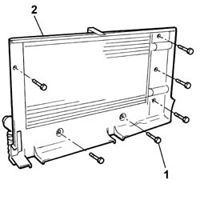
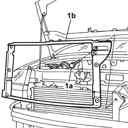
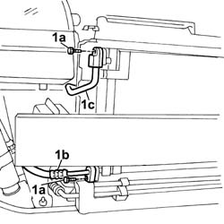
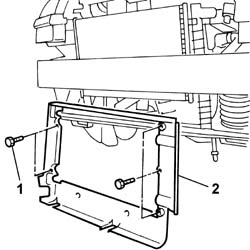

1088B26 Engine cooling radiator AIR DUCT PROTECTION/ - R.R.
- Path
- Procedures > 10 ENGINE > 1088 ENGINE COOLING > 1088B ENGINE COOLING RADIATOR - R + R > 1088B26 Engine cooling radiator AIR DUCT PROTECTION/ - R.R.
- Kind
- repair procedure (removal / refitting; the operation number is the code)
- Applies to
- all engines; all production periods
- Interactive page
- https://sloeber94.github.io/elrnDB-fDbl/en/#/2584301
Applies to: all engines; all production periods
 Removing
Removing
 Refitting
Refitting7055B54 under-engine guard - r r
1088E10 radiator cooling fan - r + r
1048A10 air cleaner filtering element - replace
1088B20 engine cooling radiator - r + r
1. Undo the bolts fixing the air duct to the radiator.
2. Remove the air duct.

Applies to: all engines; all production periods
Removing
RefittingPlace the car on a lift.
7055B54 under-engine guard - r r
1. Undo the bolts (1a) on the duct, then withdraw the duct (1b) from the top of the car.

Applies to: all engines; all production periods
Removing
RefittingDisconnect the battery negative terminal.
5040A10 Air conditioning refrigerant CIRCUIT - Draining and Refilling
1048A10 air cleaner filtering element - replace
7055B54 under-engine guard - r r
1. Undo retaining bolts (1a) and disconnect both air conditoning system hoses (1b).

Applies to: all engines; all production periods
Refitting
RemovingCheck that the air duct is not damaged.
Fit the air duct on the radiator and secure it using the fixing bolts.
1088E10 radiator cooling fan - r + r
1048A10 air cleaner filtering element - replace
Applies to: all engines; all production periods
Refitting
RemovingPosition the duct in its original seating and tighten the bolts.
7055B54 under-engine guard - r r
Remove the car from the ramp.
Applies to: all engines; all production periods
1. Undo the bolts fixing the air duct to the radiator.
2. Remove the air duct.

Applies to: all engines; all production periods
Refitting
RemovingPosition the air duct and tighten the fixing bolts.
Connect the two air conditioning system pipes .
Connect the upper and lower radiator pipes and secure them with the retaining band
1048A10 air cleaner filtering element - replace
7055B54 under-engine guard - r r
5040A10 Air conditioning refrigerant CIRCUIT - Draining and Refilling
Connect the battery negative terminal.
Topics linked from this page (8)
- 0010T20 coolant change
- 0010T21 coolant check density and top up if necessary
- 1048A10 air cleaner filtering element - replace
- 1088B20 engine cooling radiator - r + r
- 1088E10 radiator cooling fan - r + r
- 5040A10 Air conditioning refrigerant CIRCUIT - Draining and Refilling
- 7055B54 under-engine guard - r r
- 7210E10 R.R. FRONT BUMPER